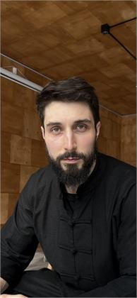
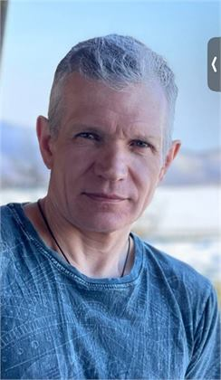
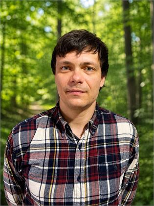
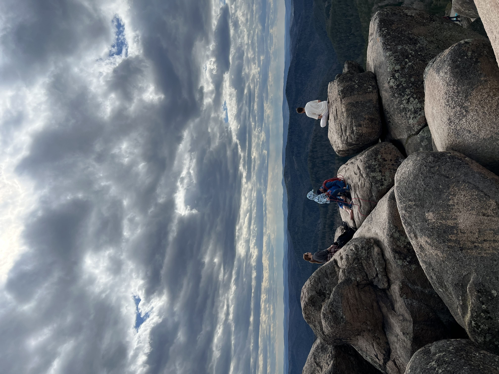
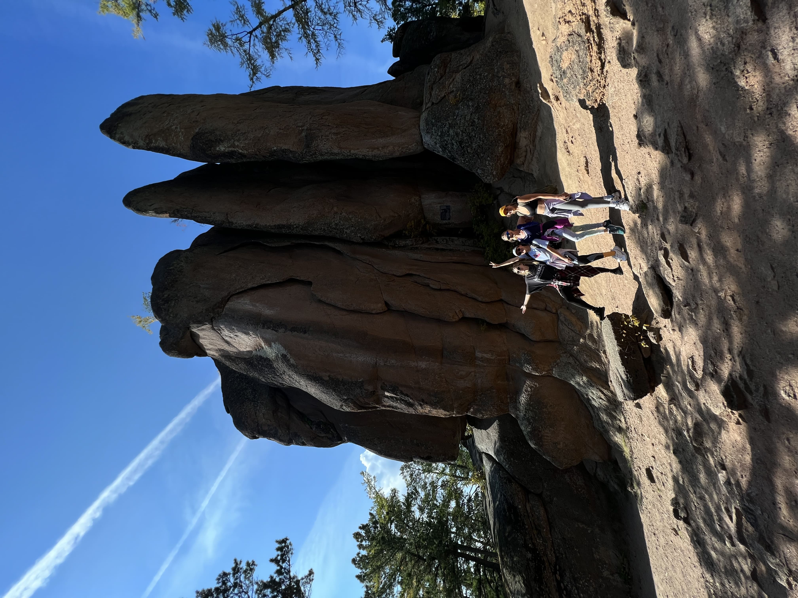

11:30
Сбор у центрального въезда
Встреча у центрального въезда в национальный парк «Столбы», погрузка в автобус и движение 7 км по дороге до кардона «Нарым».
Командная программа для тех, кому важно усилить доверие, поддержку и живое взаимодействие между людьми.
Это 5-6 часов, где команда выходит из офисных ролей и через тело, природу, маршрут, ужин и костер начинает чувствовать друг друга как единое целое.
Здесь важны не должности. Важны темп, внимание, рука на подъеме, способность ждать и видеть состояние другого.
Головой люди часто еще в офисе. Тело возвращает внимание в настоящий момент и быстро показывает правду.
Участники делятся на связки. Внутри появляются роли: ведущий, замыкающий, наблюдатель и хранитель темпа.
Встреча у центрального въезда в национальный парк «Столбы», погрузка в автобус и движение 7 км по дороге до кардона «Нарым».
Фуршет, чай, знакомство и вводная рамка. Люди переключаются из рабочего режима.
Дыхание, мягкая разминка, прохлопывания тела и настройка внимания.
Нарым → Слоник → Скала «Дед» → Львиные Ворота → Перья → Возвращение в «Нарым».
Кто-то пробует базовое скалолазание, кто-то страхует, кто-то поддерживает и подает руку.
Крик в пространство, короткая медитация, практика объединения и 3-5 минут тишины.
Намерение, символический переход, общее фото и вопрос: что усилить в себе и команде?
Команда восстанавливается, разговаривает иначе и отвечает на три вопроса: что я понял о себе, что увидел в команде, что забираю с собой в работу.
Open Mind Travel создает среду, где природа, маршрут, безопасность, разговор и еда работают как единый опыт.

11 лет в крупных индустриальных проектах. Создает среду, где человек останавливается и начинает слышать себя. Практика — это чистая физика: горы, тишина, разговор.

20+ лет в горах, пещерах и полевых условиях. Отвечает за безопасность, глубокие разговоры и реальную среду, в которой все происходит.

10 лет в лучших ресторанах Красноярска. Умеет даже в природной среде сделать из простых продуктов полноценный гастрономический опыт.
Если в команде больше 15 человек, стоимость обсуждается отдельно под формат, состав группы и задачи компании.
«Сплочение на Столбах» помогает команде выйти из офиса, пройти общий путь, увидеть друг друга живыми людьми и вернуться в работу с новым уровнем доверия.

